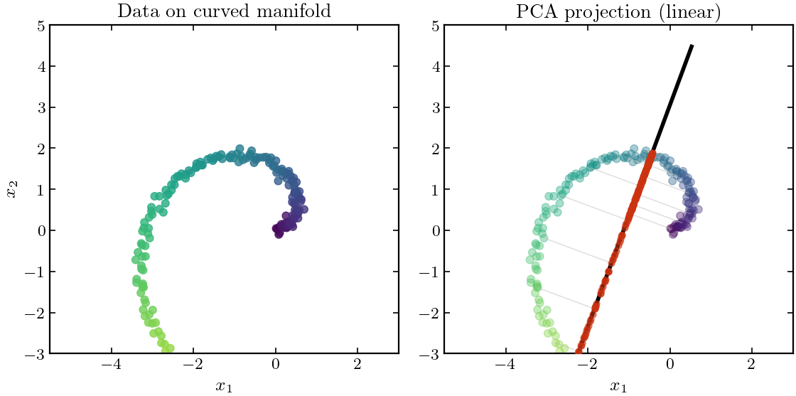

Drawing mode (d to exit, x to clear)
class: middle, title-slide .cols[ .col-2-3[ # Neural Networks ## CDS DS 595 ### Siddharth Mishra-Sharma [smsharma.io/teaching/ds595-ai4science](https://smsharma.io/teaching/ds595-ai4science.html) .small[📄 [Notes](https://bu-ds595.github.io/course-materials-spring26/notes/03-neural-networks.pdf)] ] .col-1-3[ .center.width-70[  ] .center.small[Frank Rosenblatt (1928–1971)] ] ] --- class: center, middle, section-slide # Part 1: Learning functions from data .small[Scientific data is simple actually] --- # How big is image space? Consider a tiny $64 \times 64$ RGB image. .cols[ .col-1-2[ **Ambient space:** - Each pixel has 3 channels (R, G, B), each 0–255 - $64 \times 64 \times 3 = 12{,}288$ dimensions - Number of possible images: $256^{12288} \approx 10^{29{,}000}$ For comparison, there are ~$10^{80}$ atoms in the observable universe. ] .col-1-2[ .center.width-100[] ] ] Real images are an impossibly tiny fraction! --- # The manifold hypothesis .cols[ .col-1-2[ - Real-world images concentrate on a **low-dimensional manifold** - Images come from physical processes with far fewer degrees of freedom than pixels - Learning is possible because we're not trying to learn arbitrary functions over all of pixel space—only the structured ones that occur in practice ] .col-1-2[ .center.width-100[] ] ] .highlight[ **Manifold hypothesis:** High-dimensional data lies on or near a low-dimensional manifold embedded in the ambient space. ] --- # The natural sciences are simple! .cols[ .col-1-2[ .center.width-90.shadow[] ] .col-1-2[ Eugene Wigner's famous 1959 essay asked why mathematics describes nature so well. .highlight[ The laws of physics have an unreasonable lack of algorithmic complexity. **This is why scientific data is learnable!** ] ] ] --- # Scientific data: projecting to summaries .center.width-60[] .highlight[ Scientific data often has low intrinsic dimension. Scientists exploit this by projecting data down to **summaries**. ] --- # Example: the large-scale structure of the universe .center.width-70[] .center.small[A section of the three-dimensional map constructed by BOSS. .muted[SDSS]] --- # Domain-motivated summaries Design summaries using **domain knowledge**. Build in known symmetries and structure. .cols[ .col-1-2[ **Power spectrum** $P(k)$ .center.width-70[] .small[Encodes translation invariance. .muted[Ivanov+ 1909.05277]] ] .col-1-2[ **Invariant mass** $m\_{4\ell}$ .center.width-60.shadow[] .small[Lorentz-invariant. Resonances appear as bumps. .muted[ATLAS, CERN]] ] ] --- # Data-driven summaries Learn summaries **from data**, without domain knowledge. .cols[ .col-1-2[ **PCA** — directions of maximum variance **Limitation:** Linear; misses curved structure in manifold. **Other examples:** ICA, factor analysis, clustering, e.g. k-means ] .col-1-2[ <p></p> ] ] .warning[ **Question:** What are some domain-motivated or data-driven summaries from your field? ] --- # Autoencoders: learned compression .cols[ .col-1-2[ An **autoencoder** learns to compress data through a bottleneck and reconstruct it. **Encoder** $f\_\theta$: High-dim → low-dim **Decoder** $g\_\phi$: Low-dim → high-dim **Training:** Minimize reconstruction error $\|x - \hat{x}\|^2$ The bottleneck forces the network to learn a compact representation. ] .col-1-2[ .center.width-100[] ] ] --- class: center, middle, section-slide # Part 2: Neural Networks .small[Building complex functions from simple pieces] --- # The linear layer .cols[ .col-1-2[ The basic building block: a **linear transformation**. .center[.eq-box[ $\mathbf{h} = \mathbf{W}\mathbf{x} + \mathbf{b}$ ]] - $\mathbf{x} \in \mathbb{R}^{n}$ — input vector - $\mathbf{W} \in \mathbb{R}^{m \times n}$ — weights (learned) - $\mathbf{b} \in \mathbb{R}^{m}$ — bias (learned) - $\mathbf{h} \in \mathbb{R}^{m}$ — output vector Each output is a **weighted sum** of inputs. ] .col-1-2[ .center.width-100[] ] ] --- # Linear layers transform space .center.width-60[] The matrix $\mathbf{W}$ stretches, rotates, and shears space. Every point moves to a new location determined by matrix multiplication. --- # Composing functions Build complex functions by **composing simple ones**. Each layer: linear transformation + nonlinearity. $$h\_1 = \sigma(W\_1 x + b\_1)$$ $$h\_2 = \sigma(W\_2 h\_1 + b\_2)$$ $$y = W\_3 h\_2 + b\_3$$ .cols[ .col-1-2[ - $W_\ell$: weight matrices (learned) - $b_\ell$: bias vectors (learned) - $\sigma$: nonlinear activation function (fixed) ] .col-1-2[ This is a **multilayer perceptron** (MLP), also called a fully connected or dense neural network. ] ] Without $\sigma$, stacking linear layers is still linear! --- # MLP architecture .cols[ .col-1-2[ .center.width-100[] ] .col-1-2[ $$h\_{\ell+1} = \sigma(W\_\ell \, h\_\ell + b\_\ell)$$ $$y = W\_L \, h\_L$$ where $h\_0 = x$ is the input. ] ] --- # The most common nonlinearity: ReLU .center.width-40[] --- # What nonlinearity enables: the XOR problem **XOR:** Output 1 if inputs differ, 0 if same. No single line can separate the classes. .center.width-70[] .center.small.muted[Panel (a): linear classifier fails. Panel (b): one hidden layer succeeds.] .small[Minsky & Papert (1969) proved this limitation for single-layer networks, contributing to the first AI winter.] --- # Learning to separate: watching an MLP train **Task:** Binary classification — predict red vs. blue. **Architecture:** $x$ (2D) → $h$ (16D) → $\hat{y}$ (1D) .center.width-70[] **Hidden rep.:** $h = \tanh(Wx + b)$. The network learns to "unfold" the data so it becomes **linearly separable**. --- class: center, middle, section-slide # Part 3: QM9 — Our Running Example .small[A molecular property prediction problem] --- # QM9: A molecular benchmark **134,000 small organic molecules** with quantum properties computed via DFT. .center.width-80[] --- # QM9 target: the HOMO-LUMO gap .cols[ .col-1-2[ .center.width-70[] ] .col-1-2[ **Molecular orbitals** = where electrons live. - **HOMO:** Highest Occupied Molecular Orbital - **LUMO:** Lowest Unoccupied Molecular Orbital - **Gap $\Delta\epsilon$:** Energy needed to excite an electron The gap determines optical & electronic properties. **Task:** Predict $\Delta\epsilon$ from molecular structure. ] ] .live-coding[ **Notebook:** [`qm9_mlp.ipynb`](../../notebooks/qm9_mlp.ipynb) — load QM9, explore the data, train an MLP. ] --- class: center, middle, section-slide # Part 4: Training Neural Networks .small[The basics: losses, gradients, and optimization] --- # The training loop in code .cols[ .col-1-2[ ```python class MLP(nn.Module): @nn.compact def __call__(self, x): x = nn.relu(nn.Dense(32)(x)) # hidden 1 x = nn.relu(nn.Dense(32)(x)) # hidden 2 return nn.Dense(1)(x) # output ``` ```python def loss_fn(params, X, y): preds = model.apply(params, X) # forward return jnp.mean((preds - y) ** 2) # MSE ``` ] .col-1-2[ ```python # Initialize model = MLP() params = model.init(key, X) optimizer = optax.adam(1e-3) # Training loop for epoch in range(n_epochs): for X_batch, y_batch in batches: loss, grads = jax.value_and_grad(loss_fn)( params, X_batch, y_batch ) params = optax.apply_updates( params, optimizer.update(grads) ) ``` ] ] --- # Demo: training an MLP on QM9 .live-coding[ **Notebook:** [`qm9_mlp.ipynb`](../../notebooks/qm9_mlp.ipynb) Walk through the training loop together: 1. **Featurize** molecules (baseline: atom counts) 2. **Initialize** model and optimizer 3. **Train** — watch RMSE decrease 4. **Evaluate** — baseline gets ~0.98 eV RMSE **Challenge:** Can you beat the baseline by adding better features? ] --- class: center, middle, section-slide # Part 5: Making Deep Networks Work .small[Residual connections, normalization, and flat minima] --- # The challenge of depth Deeper networks can represent more complex functions, but they're **harder to train**. .cols[ .col-1-2[ Gradients must flow backward through many layers. They can: - **Vanish** (shrink to zero) → early layers don't learn - **Explode** (grow unboundedly) → training becomes unstable **Solutions:** weight initialization, residual connections, normalization layers. ] .col-1-2[ .center.width-100[] ] ] --- # Residual connections .cols[ .col-1-2[ Instead of learning $h' = F(h)$, learn the **residual**: $$h' = F(h) + h$$ The network learns what to *add* to the input. Gradients flow directly through the skip connection, bypassing the layers. ] .col-1-2[ .center.width-100[] ] ] --- # Normalization During training, the distribution of each layer's inputs shifts as earlier layers change. This makes training unstable—later layers are trying to hit a moving target. **Batch normalization:** Normalize each feature across the mini-batch to zero mean, unit variance. $$\hat{x} = \frac{x - \mu\_{\text{batch}}}{\sigma\_{\text{batch}}}$$ -- Residual connections + normalization: the modern recipe for training deep networks. .center[ .eq-box[ $h' = h + F(\text{Norm}(h))$ ] ] --- # Loss landscapes .center.width-70[  ] .footnote[Li et al., *Visualizing the Loss Landscape of Neural Nets*, 2017 ([arXiv:1712.09913](https://arxiv.org/abs/1712.09913))] --- # Why flat minima generalize .cols[ .col-1-2[ The validation loss landscape is slightly shifted from training (different data). **Sharp minimum:** Small shift causes large increase in loss. **Flat minimum:** Same shift causes small increase. The solution is **robust**. ] .col-1-2[ .center.width-100[] ] ] SGD with small batches tends to find flatter minima—the noise helps explore and avoid sharp valleys. --- # SGD as implicit regularization .cols[ .col-1-2[ SGD is not just an optimizer, but also a **regularizer**. .highlight[ SGD (especially with small learning rates, mini-batches, and early stopping) in high dimensions is biased towards "simple" solutions when there are many. ] ] .col-1-2[ .center.width-100[] ] ] --- # More tricks of the trade .cols[ .col-1-2[ **Weight initialization** - Random weights must be scaled properly - Too large/small = exploding/vanishing gradients **Dropout** - Randomly zero out neurons during training - Forces redundancy, reduces overfitting **Weight decay (L2 regularization)** - Add $\lambda \|\theta\|^2$ to loss, penalizing large weights - Encourages simpler solutions ] .col-1-2[ **Learning rate scheduling** - Start with warmup (gradually increase LR) - Decay over time (step, cosine, exponential) **Early stopping** - Monitor validation loss during training - Stop when it starts increasing .small[📖 Karpathy's [A Recipe for Training Neural Networks](https://karpathy.github.io/2019/04/25/recipe/)] ] ] --- class: center, middle, section-slide # Part 6: Inductive Biases .small[The role of architecture in learning structure] --- # The MNIST shift experiment .cols[ .col-1-2[ **Setup:** 1. Train MLP on MNIST (centered handwritten digits) 2. Test on same digits, shifted by a few pixels **Result:** Accuracy crashes from ~95% to ~50%. The network learned *where* the digit is, not *what* it is. ] .col-1-2[ .center[  ] ] ] --- # The fix: weight sharing What if we **forced** the network to use the **same weights** at every position? .cols[ .col-1-2[ - Learn one "edge detector" that works everywhere - Massively fewer parameters - If the input shifts, the output shifts the same way This is **convolution** — more next lecture. ] .col-1-2[ .center.width-100[] ] ] --- # Inductive biases .cols[ .col-1-2[ An **inductive bias** = assumption built into the model. Many hypotheses fit the training data. The inductive bias determines which ones we **prefer**. The right inductive bias makes learning **much** easier. ] .col-1-2[ .center[  ] ] ] --- # Inductive biases by data type | Data type | Structure | Inductive bias | Architecture | |-----------|-----------|----------------|--------------| | Images | Grid, local correlations | Translation equivariance | CNN | | Sequences | Ordered, variable length | Position matters | RNN, Transformer | | Sets | Unordered collection | Permutation invariance | DeepSets | | Graphs | Nodes + edges | Permutation + edge structure | GNN | | 3D point clouds | Positions in space | Rotation + translation equivariance | E(3)-equivariant nets |